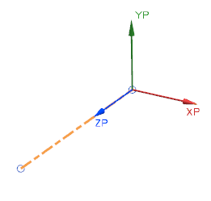
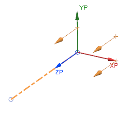
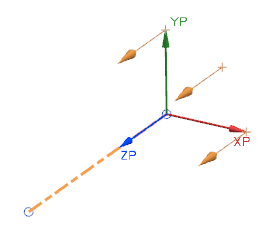
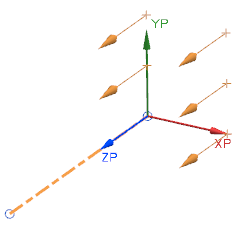

平行偏置路径
平行偏置路径命令让您选择父路径，并基于父路径创建任意数量的圆形或者矩形阵列的关联路径。这在您设计多条彼此并排的管线时非常有用。父路径只能是线性或者圆弧管线段，不能使用样条线段。
当您选择父线段或路径时，图样坐标符号将会出现在路径上，其 ZP 轴与父路径对齐。

要把坐标符号移动到路径相反侧终点处，点击移动图样显示。
您设定的偏置图样是用坐标符号的 ZP 轴计算得到的。当您输入阵列值时，将会出现预览，以为您显示当前输入值创建后的效果。

圆形
要创建圆形阵列，您必须输入一个偏置半径值(在 XP 方向上计算)，在 XP-YP 平面上的路径数量以及阵列的总角度。角度是从 +ZP 轴的逆时针方向计算的。
|
 |
矩形
使用矩形偏置时，列是沿着 XP 轴，行沿着 YP 轴。
|
 |
父级行和父级列决定了矩形阵列开始的位置。
位于何处？
|
工具条 |
机械管线布置→路径下拉菜单→平行偏置路径 |
|
菜单 |
插入→管线布置路径→平行偏置路径 |
|
快捷菜单 |
右击管线段→平行偏置路径 |